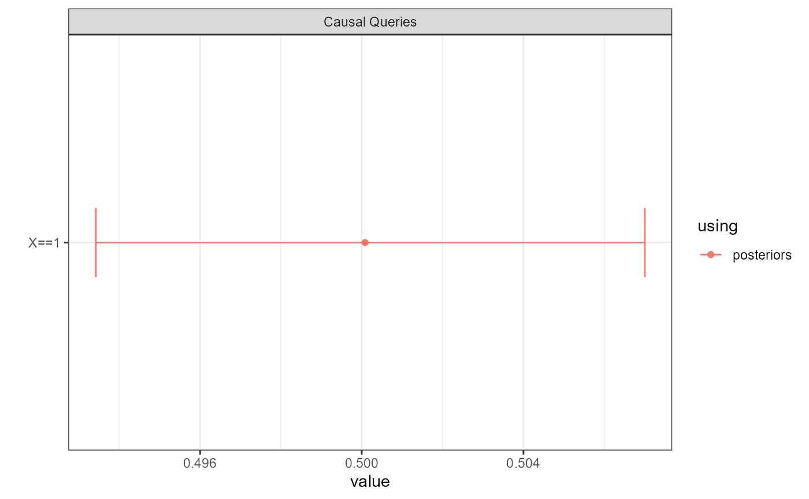
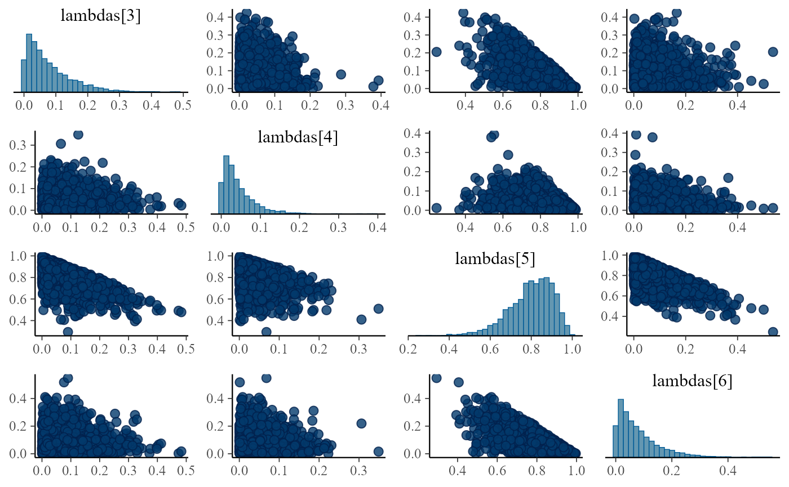
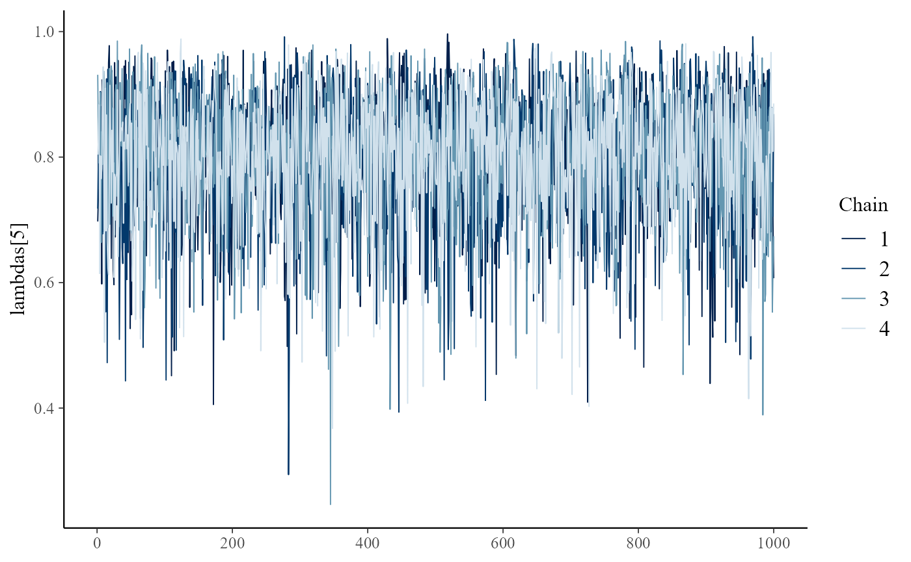

library(CausalQueries)
library(knitr)
library(ggplot2)
library(rstan)
library(bayesplot)
rstan_options(refresh = 0)Accessing the posterior
When you update a model using CausalQueries,
CausalQueries generates and updates a stan
model and saves the posterior distribution over parameters in the
model.
The basic usage is:
data <- data.frame(X = rep(c(0:1), 10), Y = rep(c(0:1), 10))
model <- make_model("X -> Y") |>
update_model(data)The posterior over parameters can be accessed thus:
inspect(model, "posterior_distribution")
#>
#> posterior_distribution
#> Summary statistics of model parameters posterior distributions:
#>
#> Distributions matrix dimensions are
#> 4000 rows (draws) by 6 cols (parameters)
#>
#> mean sd
#> X.0 0.50 0.11
#> X.1 0.50 0.11
#> Y.00 0.08 0.07
#> Y.10 0.04 0.04
#> Y.01 0.80 0.11
#> Y.11 0.08 0.07When querying a model you can request use of the posterior
distribution with the using argument:
model |>
query_model(
query = "Y[X=1] > Y[X=0]",
using = c("priors", "posteriors")) |>
kable(digits = 2)| label | query | given | using | case_level | mean | sd | cred.low | cred.high |
|---|---|---|---|---|---|---|---|---|
| Y[X=1] > Y[X=0] | Y[X=1] > Y[X=0] | - | priors | FALSE | 0.25 | 0.20 | 0.01 | 0.72 |
| Y[X=1] > Y[X=0] | Y[X=1] > Y[X=0] | - | posteriors | FALSE | 0.80 | 0.11 | 0.55 | 0.95 |
Summary of stan performance
You can access a summary of the parameter values and convergence
information as produced by stan thus:
inspect(model, "stan_summary")
#>
#> stan_summary
#> Stan model summary:
#>
#> Inference for Stan model: simplexes.
#> 4 chains, each with iter=2000; warmup=1000; thin=1;
#> post-warmup draws per chain=1000, total post-warmup draws=4000.
#>
#> mean se_mean sd 2.5% 25% 50% 75% 97.5% n_eff Rhat
#> X.0 0.50 0.00 0.11 0.30 0.42 0.50 0.57 0.72 2017 1
#> X.1 0.50 0.00 0.11 0.28 0.43 0.50 0.58 0.70 2017 1
#> Y.00 0.08 0.00 0.07 0.00 0.03 0.06 0.11 0.27 2159 1
#> Y.10 0.04 0.00 0.04 0.00 0.01 0.03 0.06 0.14 4189 1
#> Y.01 0.80 0.00 0.11 0.55 0.74 0.82 0.88 0.95 4365 1
#> Y.11 0.08 0.00 0.07 0.00 0.02 0.06 0.11 0.26 4005 1
#> X0.Y00 0.04 0.00 0.04 0.00 0.01 0.03 0.06 0.14 2103 1
#> X1.Y00 0.04 0.00 0.04 0.00 0.01 0.03 0.06 0.14 2172 1
#> X0.Y10 0.02 0.00 0.02 0.00 0.01 0.01 0.03 0.07 3589 1
#> X1.Y10 0.02 0.00 0.02 0.00 0.01 0.02 0.03 0.07 4177 1
#> X0.Y01 0.40 0.00 0.10 0.21 0.33 0.40 0.47 0.61 2417 1
#> X1.Y01 0.40 0.00 0.10 0.21 0.33 0.40 0.47 0.60 2407 1
#> X0.Y11 0.04 0.00 0.04 0.00 0.01 0.03 0.05 0.14 3899 1
#> X1.Y11 0.04 0.00 0.04 0.00 0.01 0.03 0.06 0.14 3652 1
#> lp__ -14.60 0.04 1.53 -18.42 -15.31 -14.26 -13.52 -12.66 1214 1
#>
#> Samples were drawn using NUTS(diag_e) at Wed Nov 27 14:53:01 2024.
#> For each parameter, n_eff is a crude measure of effective sample size,
#> and Rhat is the potential scale reduction factor on split chains (at
#> convergence, Rhat=1).This summary provides information on the distribution of parameters
as well as convergence diagnostics, summarized in the Rhat
column. In the printout above the first six rows show the distribution
of the model parameters; the next eight rows show the distribution over
transformed parameters, here the causal types. The last row shows the
unnormalized log density on Stan’s unconstrained space which, as
described in Stan
documentation is intended to diagnose sampling efficiency and
evaluate approximations.
See stan documentation for further details.
Warnings!
We will pass on a summary of warnings generated by stan
when there are indications that updating has not gone well.
The below produces warnings as it is executed. (Here there are few iterations but also it is a difficult model as data is entirely missing on a mediator and the data pattern is consistent with two opposite models: one combining positive effects and one combining negative effects.)
model <-
make_model("X -> M -> Y; M <-> Y") |>
update_model(data = data.frame(X = rep(0:1, 10000), Y = rep(0:1, 10000)),
iter = 500,
refresh = 0)
#> Warning: Bulk Effective Samples Size (ESS) is too low, indicating posterior means and medians may be unreliable.
#> Running the chains for more iterations may help. See
#> https://mc-stan.org/misc/warnings.html#bulk-ess
#> Warning: Tail Effective Samples Size (ESS) is too low, indicating posterior variances and tail quantiles may be unreliable.
#> Running the chains for more iterations may help. See
#> https://mc-stan.org/misc/warnings.html#tail-essYou can access these warnings like this:
inspect(model, "stan_warnings")
#>
#> stan_warnings
#> Stan warnings generated during updating:
#> Bulk Effective Samples Size (ESS) is too low
#> Tail Effective Samples Size (ESS) is too lowBut we will also remind you about them when you use the
print or summary methods:
model
#>
#> Causal statement:
#> M -> Y; M <-> Y; X -> M
#>
#> Number of nodal types by node:
#> X M Y
#> 2 4 4
#>
#> Number of causal types: 32
#>
#> Model has been updated and contains a posterior distribution with
#> 4 chains, each with iter=500; warmup=250; thin=1;
#> Use inspect(model, 'stan_objects') to inspect stan summary
#>
#> Warnings passed from rstan during updating:
#> Bulk Effective Samples Size (ESS) is too low
#> Tail Effective Samples Size (ESS) is too lowAnd also when you query the model:
query_model(model, "X==1", using = "posteriors")
#> Note: warnings passed from rstan during updating:
#>
#> Model 1 warnings:
#> Bulk Effective Samples Size (ESS) is too low
#> Tail Effective Samples Size (ESS) is too low
#>
#>
#> Causal queries generated by query_model (all at population level)
#>
#> |query |using | mean| sd| cred.low| cred.high|
#> |:-----|:----------|----:|-----:|--------:|---------:|
#> |X==1 |posteriors | 0.5| 0.003| 0.493| 0.507|
query_model(model, "X==1", using = "posteriors") |> plot()
#> Note: warnings passed from rstan during updating:
#>
#> Model 1 warnings:
#> Bulk Effective Samples Size (ESS) is too low
#> Tail Effective Samples Size (ESS) is too low
These warnings are not always important but safest to be aware of them if they arise and to investigate further. For more on warnings see stan post on warnings.
Advanced diagnostics
If you are interested in advanced diagnostics of performance you can
save and access the raw stan output.
model <- make_model("X -> Y") |>
update_model(data, keep_fit = TRUE)Note that the summary for this raw output shows the labels used in
the generic stan model: lambda for the vector
of parameters, corresponding to the parameters in the parameters
dataframe (inspect(model, "parameters_df")), and , if
saved, a vector types for the causal types (see
inspect(model, "causal_types")) and w for the
event probabilities
(inspect(model, "prior_event_probabilities")).
model |> inspect("stanfit")
#>
#> stanfit
#> Stan model summary:
#> Inference for Stan model: simplexes.
#> 4 chains, each with iter=2000; warmup=1000; thin=1;
#> post-warmup draws per chain=1000, total post-warmup draws=4000.
#>
#> mean se_mean sd 2.5% 25% 50% 75% 97.5% n_eff Rhat
#> lambdas[1] 0.50 0.00 0.10 0.29 0.42 0.50 0.57 0.70 2139 1
#> lambdas[2] 0.50 0.00 0.10 0.30 0.43 0.50 0.58 0.71 2139 1
#> lambdas[3] 0.08 0.00 0.07 0.00 0.03 0.06 0.11 0.26 2048 1
#> lambdas[4] 0.04 0.00 0.04 0.00 0.01 0.03 0.06 0.15 4175 1
#> lambdas[5] 0.80 0.00 0.11 0.55 0.74 0.81 0.88 0.96 4528 1
#> lambdas[6] 0.08 0.00 0.07 0.00 0.02 0.06 0.11 0.27 4225 1
#> types[1] 0.04 0.00 0.04 0.00 0.01 0.03 0.05 0.14 1999 1
#> types[2] 0.04 0.00 0.04 0.00 0.01 0.03 0.06 0.14 2107 1
#> types[3] 0.02 0.00 0.02 0.00 0.01 0.01 0.03 0.08 4059 1
#> types[4] 0.02 0.00 0.02 0.00 0.01 0.02 0.03 0.07 3872 1
#> types[5] 0.40 0.00 0.10 0.21 0.33 0.39 0.47 0.60 2567 1
#> types[6] 0.40 0.00 0.10 0.22 0.34 0.40 0.47 0.60 2481 1
#> types[7] 0.04 0.00 0.04 0.00 0.01 0.03 0.06 0.14 3943 1
#> types[8] 0.04 0.00 0.04 0.00 0.01 0.03 0.06 0.14 4067 1
#> lp__ -14.55 0.04 1.52 -18.45 -15.30 -14.24 -13.42 -12.63 1348 1
#>
#> Samples were drawn using NUTS(diag_e) at Wed Nov 27 14:53:10 2024.
#> For each parameter, n_eff is a crude measure of effective sample size,
#> and Rhat is the potential scale reduction factor on split chains (at
#> convergence, Rhat=1).You can then use diagnostic packages such as
bayesplot.
model |> inspect("stanfit") |>
bayesplot::mcmc_pairs(pars = c("lambdas[3]", "lambdas[4]", "lambdas[5]", "lambdas[6]"))
#>
#> stanfit
#> Stan model summary:
#> Inference for Stan model: simplexes.
#> 4 chains, each with iter=2000; warmup=1000; thin=1;
#> post-warmup draws per chain=1000, total post-warmup draws=4000.
#>
#> mean se_mean sd 2.5% 25% 50% 75% 97.5% n_eff Rhat
#> lambdas[1] 0.50 0.00 0.10 0.29 0.42 0.50 0.57 0.70 2139 1
#> lambdas[2] 0.50 0.00 0.10 0.30 0.43 0.50 0.58 0.71 2139 1
#> lambdas[3] 0.08 0.00 0.07 0.00 0.03 0.06 0.11 0.26 2048 1
#> lambdas[4] 0.04 0.00 0.04 0.00 0.01 0.03 0.06 0.15 4175 1
#> lambdas[5] 0.80 0.00 0.11 0.55 0.74 0.81 0.88 0.96 4528 1
#> lambdas[6] 0.08 0.00 0.07 0.00 0.02 0.06 0.11 0.27 4225 1
#> types[1] 0.04 0.00 0.04 0.00 0.01 0.03 0.05 0.14 1999 1
#> types[2] 0.04 0.00 0.04 0.00 0.01 0.03 0.06 0.14 2107 1
#> types[3] 0.02 0.00 0.02 0.00 0.01 0.01 0.03 0.08 4059 1
#> types[4] 0.02 0.00 0.02 0.00 0.01 0.02 0.03 0.07 3872 1
#> types[5] 0.40 0.00 0.10 0.21 0.33 0.39 0.47 0.60 2567 1
#> types[6] 0.40 0.00 0.10 0.22 0.34 0.40 0.47 0.60 2481 1
#> types[7] 0.04 0.00 0.04 0.00 0.01 0.03 0.06 0.14 3943 1
#> types[8] 0.04 0.00 0.04 0.00 0.01 0.03 0.06 0.14 4067 1
#> lp__ -14.55 0.04 1.52 -18.45 -15.30 -14.24 -13.42 -12.63 1348 1
#>
#> Samples were drawn using NUTS(diag_e) at Wed Nov 27 14:53:10 2024.
#> For each parameter, n_eff is a crude measure of effective sample size,
#> and Rhat is the potential scale reduction factor on split chains (at
#> convergence, Rhat=1).
np <- model |> inspect("stanfit") |> bayesplot::nuts_params()
#>
#> stanfit
#> Stan model summary:
#> Inference for Stan model: simplexes.
#> 4 chains, each with iter=2000; warmup=1000; thin=1;
#> post-warmup draws per chain=1000, total post-warmup draws=4000.
#>
#> mean se_mean sd 2.5% 25% 50% 75% 97.5% n_eff Rhat
#> lambdas[1] 0.50 0.00 0.10 0.29 0.42 0.50 0.57 0.70 2139 1
#> lambdas[2] 0.50 0.00 0.10 0.30 0.43 0.50 0.58 0.71 2139 1
#> lambdas[3] 0.08 0.00 0.07 0.00 0.03 0.06 0.11 0.26 2048 1
#> lambdas[4] 0.04 0.00 0.04 0.00 0.01 0.03 0.06 0.15 4175 1
#> lambdas[5] 0.80 0.00 0.11 0.55 0.74 0.81 0.88 0.96 4528 1
#> lambdas[6] 0.08 0.00 0.07 0.00 0.02 0.06 0.11 0.27 4225 1
#> types[1] 0.04 0.00 0.04 0.00 0.01 0.03 0.05 0.14 1999 1
#> types[2] 0.04 0.00 0.04 0.00 0.01 0.03 0.06 0.14 2107 1
#> types[3] 0.02 0.00 0.02 0.00 0.01 0.01 0.03 0.08 4059 1
#> types[4] 0.02 0.00 0.02 0.00 0.01 0.02 0.03 0.07 3872 1
#> types[5] 0.40 0.00 0.10 0.21 0.33 0.39 0.47 0.60 2567 1
#> types[6] 0.40 0.00 0.10 0.22 0.34 0.40 0.47 0.60 2481 1
#> types[7] 0.04 0.00 0.04 0.00 0.01 0.03 0.06 0.14 3943 1
#> types[8] 0.04 0.00 0.04 0.00 0.01 0.03 0.06 0.14 4067 1
#> lp__ -14.55 0.04 1.52 -18.45 -15.30 -14.24 -13.42 -12.63 1348 1
#>
#> Samples were drawn using NUTS(diag_e) at Wed Nov 27 14:53:10 2024.
#> For each parameter, n_eff is a crude measure of effective sample size,
#> and Rhat is the potential scale reduction factor on split chains (at
#> convergence, Rhat=1).
head(np) |> kable()| Chain | Iteration | Parameter | Value |
|---|---|---|---|
| 1 | 1 | accept_stat__ | 0.9753211 |
| 1 | 2 | accept_stat__ | 0.9603321 |
| 1 | 3 | accept_stat__ | 0.9661280 |
| 1 | 4 | accept_stat__ | 0.9968458 |
| 1 | 5 | accept_stat__ | 0.8585578 |
| 1 | 6 | accept_stat__ | 0.9990942 |
model |>
inspect("stanfit") |>
bayesplot::mcmc_trace(pars = "lambdas[5]", np = np)
#>
#> stanfit
#> Stan model summary:
#> Inference for Stan model: simplexes.
#> 4 chains, each with iter=2000; warmup=1000; thin=1;
#> post-warmup draws per chain=1000, total post-warmup draws=4000.
#>
#> mean se_mean sd 2.5% 25% 50% 75% 97.5% n_eff Rhat
#> lambdas[1] 0.50 0.00 0.10 0.29 0.42 0.50 0.57 0.70 2139 1
#> lambdas[2] 0.50 0.00 0.10 0.30 0.43 0.50 0.58 0.71 2139 1
#> lambdas[3] 0.08 0.00 0.07 0.00 0.03 0.06 0.11 0.26 2048 1
#> lambdas[4] 0.04 0.00 0.04 0.00 0.01 0.03 0.06 0.15 4175 1
#> lambdas[5] 0.80 0.00 0.11 0.55 0.74 0.81 0.88 0.96 4528 1
#> lambdas[6] 0.08 0.00 0.07 0.00 0.02 0.06 0.11 0.27 4225 1
#> types[1] 0.04 0.00 0.04 0.00 0.01 0.03 0.05 0.14 1999 1
#> types[2] 0.04 0.00 0.04 0.00 0.01 0.03 0.06 0.14 2107 1
#> types[3] 0.02 0.00 0.02 0.00 0.01 0.01 0.03 0.08 4059 1
#> types[4] 0.02 0.00 0.02 0.00 0.01 0.02 0.03 0.07 3872 1
#> types[5] 0.40 0.00 0.10 0.21 0.33 0.39 0.47 0.60 2567 1
#> types[6] 0.40 0.00 0.10 0.22 0.34 0.40 0.47 0.60 2481 1
#> types[7] 0.04 0.00 0.04 0.00 0.01 0.03 0.06 0.14 3943 1
#> types[8] 0.04 0.00 0.04 0.00 0.01 0.03 0.06 0.14 4067 1
#> lp__ -14.55 0.04 1.52 -18.45 -15.30 -14.24 -13.42 -12.63 1348 1
#>
#> Samples were drawn using NUTS(diag_e) at Wed Nov 27 14:53:10 2024.
#> For each parameter, n_eff is a crude measure of effective sample size,
#> and Rhat is the potential scale reduction factor on split chains (at
#> convergence, Rhat=1).
#> No divergences to plot.